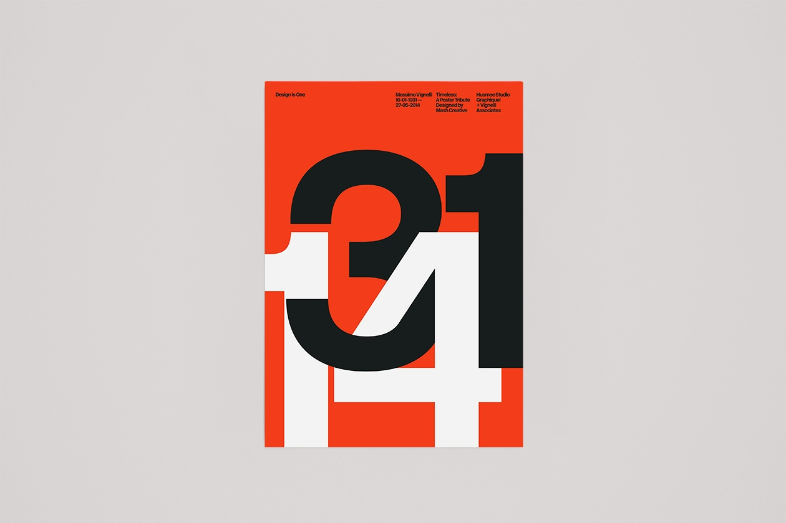

Famous Works By Massimo Vignelli
The New York Subway Map
Massimo Vignelli and his company Vignelli Associates have worked on a range of different products throughout the 1900's with brand names like American Airlines, Ford Motor Company, Knoll International, Bloomingdale's and most notably his design of the New York Subway Map in the late 1960's. Vignelli was selected to create a design system illustrating the underground subway system in New York in 1966 which is possibly one of his most famous pieces of work and also one of his greatest projects as he would consider it.[Livingston, A. and Livingston, I., 2012.] The New York Subway Map became one of the most iconic designs and has inspired numerous information designs around the world, one of which being the London Underground system which has similar characteristics to the design Massimo Vignelli did for the New York Subway Map. Along with being one of Massimo's favourite projects he worked on throughout his career it also became a huge inspiration for modern information design today.[B. Meggs, P., W. Purvis, A., 2016.]
Corporate Identity
After Vignelli's relocation to New York in 1965 where he worked alongside Unimark International he went on to create the brand identity for one of the most prestigious airlines in the world, American Airlines.[B. Meggs, P., W. Purvis, A., 2016.] In 1967, Vignelli was hired by American Airlines to develop their corporate identity and design their new logo which would become the face of the company, the geometric composition of the elements within the logo demonstrate Massimo Vignelli's design style and his approach to design using geometric shapes, typography and grid systems.[Livingston, A. and Livingston, I., 2012.] In addition to developing the corporate identity and logotype for American Airlines, Vignelli is also well-known for the work he did in developing the corporate identity of Knoll International who were a furniture manufacturing company founded in New York.[Livingston, A. and Livingston, I., 2012.] Vignelli's design of the Knoll logo illustrated the ideology and methodology he followed when designing, these were similar to the principles of the Modernist, Bauhaus and Swiss Design movements throughout the 1900's which focused on clarity as opposed to beauty and saw typography as a form of communication that everyone is able to understand. Massimo followed these principles religiously and focused on delivering work that was clear and concise for what it is intended for.
Print Publications
Massimo Vignelli has also worked on a number of print publications throughout his career as a graphic designer and product designer some of which include book publications for Chanticleer Press and Rizzoli International Publications where his primary focus was on typography and lettering as the main elements of the design.[Livingston, A. and Livingston, I., 2012.] This held similarities with the Swiss Design movement and other Modernist movements at the time and Massimo focused his attention to creating clarity through the use of systematic grid systems and clear typography, Massimo also used a lot of sans-serif typefaces throughout his work which shared the ideas of Laszlo Moholy-Nagy, Josef Albers and Herbert Bayer from the Bauhaus Design movement in the 1920's.
Below are some poster designs that have been influenced by the works of Massimo Vignelli, you can see the principles of design Vignelli followed and how he used typography as a form of communication. These are some designs that would influence my own personal design projects especially the use of typography to create a visual hierarchy between content.
